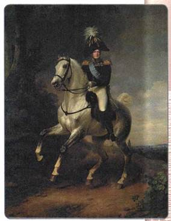
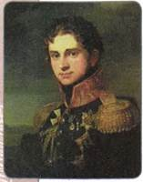
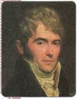
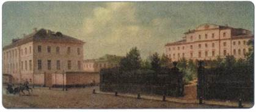
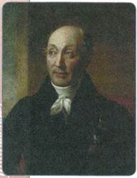
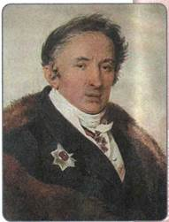
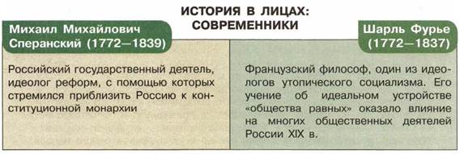

Почему в начале XIX в. правящие круги России пришли к выводу о необходимости проведения в стране реформ?
1. Новый император
В марте 1801 г. на российский престол вступил новый император — Александр I, сын Павла I. Он занимал престол в течение всей первой четверти XIX в. (1801 —1825). Значительный отпечаток на личность, характер Александра нанесли обстоятельства, сопровождавшие его детство и юность. Воспитание наследника престола полностью контролировала бабка, Екатерина II, с детских лет отдалив мальчика от родителей. Властная Екатерина стремилась привить ему идеи Просвещения.

Александр I. Художник Ф. Крюгер
Одним из воспитателей Александра I был швейцарский правовед Ф. Лагарп, приверженец идей либерализма, широко образованный человек. Он много говорил об отрицательных сторонах крепостного права, о пользе введения конституции и управления страной на основе законов, а не желаний правителя, при участии выборных учреждений (парламента) в принятии этих законов, ратовал за предоставление населению гражданских свобод и т. д.
Но и отец, Павел I, также оказывал влияние на Александра. Именно от него император унаследовал страсть к военным парадам и манёврам — зримым свидетельствам неограниченной власти монарха. Необходимость лавировать между дворами бабки и отца, очень разными по духу, также наложила отпечаток на характер Александра I.
Став императором огромной Российской империи в возрасте 24 лет, Александр I был полон желания обновить страну, улучшить в ней многое. В манифесте о восшествии на престол он заявил, что будет управлять страной «по законам и по сердцу бабки своей — Екатерины Великой».
2. Негласный комитет
Вокруг царя сложился круг «молодых друзей»: единомышленников, сверстников, с которыми он некогда вместе воспитывался и учился. Это были граф П. А. Строганов, Н. Н. Новосильцев, князь А. А. Чарторыйский, граф В. П. Кочубей. Они составили так называемый Негласный комитет, на заседаниях комитета обсуждались проекты преобразований в духе идей либерализма.
При непосредственном участии членов Негласного комитета были осуществлены первые шаги нового царствования: отменены многие законы, принятые Павлом I и вызвавшие особое недовольство дворян. Так, уже в апреле 1801 г. восстановлено в полном объёме действие Жалованной грамоты дворянству и Жалованной грамоты городам, помилованы многие пострадавшие при Павле, улучшено содержание заключённых, открыты границы, разрешено свободно ввозить зарубежные книги.
Заседания Негласного комитета начались в июне 1801 г. и регулярно проходили вплоть до мая 1802 г. Главным результатом деятельности Негласного комитета должно было стать ограничение самодержавия. С этим, казалось, был согласен и сам царь. Но вначале решено было провести реформы в области управления страной.
3. Реформа управления: учреждение министерств

П. А. Строганов

В. П. Кочубей
Идеи об улучшении управления страной нашли своё отражение в министерской реформе Александра I. По указу 1802 г. существовавшая ещё со времён Петра I система коллегий была упразднена. Вместо коллегий было образовано 8 министерств: военное, морское, иностранных дел, внутренних дел, юстиции, финансов, народного просвещения, коммерции. Для обсуждения общих вопросов управления был учреждён Комитет министров.
Министерства, в отличие от коллегий, были основаны не на принципе коллегиальности, а на принципе единоличной власти. Во главе каждого Министерства стоял министр, имевший широкие полномочия, нёсший личную ответственность за принимаемые им решения.
Министерствам по принципу линейности подчинялись органы власти на местах. Например, Министерству внутренних дел подчинялись главы губерний — губернаторы, которым, в свою очередь, подчинялись главы уездов — капитан-исправники, и т. п. Так было построено централизованное управление огромной страной.
Все члены Негласного комитета вошли в состав правительства: Кочубей стал министром внутренних дел, Строганов — его заместителем; заместителем министра юстиции назначили Новосильцева, Чарторыйский стал фактически министром иностранных дел (хотя официально был лишь его заместителем).
В 1802 г. изменились функции Сената. Он стал высшим судебным органом, также он должен был контролировать деятельность местных властей.
4. Реформа образования
Указами 1803—1804 гг. Александр заложил основы единой системы образования в стране. Была создана единая сеть учебных заведений. В приходских школах могли обучаться дети крестьян, в уездных училищах — дети мещан, в губернских гимназиях — дети дворян. Страна была поделена на 6 учебных округов, каждый со своим университетом. Университеты получили значительную автономию (независимость от властей).

Здания гимназий. Художник Н. А. Розанов
5. Политика в отношении крестьян
Основой экономики в стране по-прежнему оставалось крепостное хозяйство. Александр издал ряд указов по так называемому «крестьянскому вопросу», но они не повлияли серьёзно на положение крестьян.
В 1801 г. Александр I предоставил право купцам, мещанам и государственным крестьянам покупать ненаселённые земли (т. е. земли без крепостных крестьян, прикреплённых к ним).
Одним из самых важных решений Александра I стал указ от 20 февраля 1803 г. о «вольных хлебопашцах». Указ разрешил помещикам отпускать своих крепостных на волю с земельными наделами за выкуп. Это был первый в истории России закон, дававший возможность освобождения крестьян от крепостной зависимости. Однако его практическое применение было незначительно. За все 25 лет царствования Александра I лишь 47 тыс. крестьян (т. е. меньше 0,5 % от общего числа крепостных) смогли таким образом купить себе свободу: большинство помещиков не помышляли о «раздаче своей собственности».
В 1804 г. был сделан первый шаг к отмене крепостного права в Прибалтике: чётко определены размеры крестьянских повинностей и платежей, а крестьяне признаны наследственными владельцами своих земельных участков. По мнению Александра I, реформы в Прибалтике должны были в будущем «показать пример всей России».
6*. Реформаторская деятельность М. М. Сперанского
Негласный комитет прекратил свою работу в 1803 г. Но полностью от реформаторских идей Александр I не отказался. Попытки продолжить реформы в духе ограничения самодержавной власти и привлечения к управлению страной разных слоёв населения оказались связаны с именем М. М. Сперанского.
Михаил Михайлович Сперанский (1772—1839)
Государственный деятель, происходил из семьи бедного сельского священника, жившего под Владимиром. После окончания санкт-петербургской Александро-Невской академии (высшего духовного учебного заведения) он некоторое время работал учителем, а затем секретарём у князя
А. Б. Куракина — любимца Павла I. С 1802 г. перешёл на службу в Министерство внутренних дел. Члены Негласного комитета привлекали Сперанского к обобщению материалов своих обсуждений, а затем стали поручать ему составление проектов по заданным ими темам. В период болезни министра Кочубея Сперанский заменил его на личных докладах императору о положении дел. Во время этих докладов Александр обратил на него внимание, увидев в Сперанском того, кто способен сформулировать задуманные преобразования. С 1807 г. Сперанский был статс-секретарём императора, а с 1808 г. — заместителем министра юстиции, который одновременно являлся и генерал-прокурором Сената. Сперанский подготовил ряд проектов, предполагавших проведение в стране либеральных реформ.

М. М. Сперанский
Александр поручил Сперанскому подготовить проект реформ. В октябре 1809 г. Сперанский представил «План государственного преобразования». Главная его идея состояла в создании органов управления на местах, которые помогли бы императору управлять огромной страной. Сперанский предлагал:
— на местах образовать органы самоуправления — думы: волостные, уездные, губернские, и венчающую их Государственную думу;
— ввести управление государством на основе разделения властей: законодательная власть будет принадлежать новому выборному учреждению — Государственной думе; исполнительная власть — министерствам; судебная власть — Сенату;
— образовать ещё один новый орган — Государственный совет, который должен будет помогать императору определять, какие законопроекты следует вносить в Государственную думу;
— установить три основных сословия общества: 1) дворянство; 2) «среднее состояние» (купцы, мещане, государственные крестьяне); 3) «народ рабочий» (крепостные крестьяне, домашние слуги, рабочие);
— политические права предоставить только первым двум сословиям («свободным сословиям»), а третьему сословию дать общие гражданские права (главным среди них было положение о том, что «никто не может быть наказан без судебного приговора») и возможность по мере накопления собственности и капитала перейти во второе сословие;
— избирательное право предоставить только тем, кто обладает движимым и недвижимым имуществом (т. е. представителям первых двух сословий);
— выборы в Государственную думу сделать четырёхступенчатыми (вначале должны проходить выборы в волостные думы, затем депутаты этих органов избирали членов окружных дум, те в свою очередь — депутатов губернских дум. И лишь губернские думы выбирали депутатов Государственной думы);
— руководить работой Думы должен был назначаемый царём канцлер.
Осуществление проекта Сперанского должно было стать важным шагом на пути реформ. Этот план со временем получил бы развитие в других преобразованиях. Конечную цель реформатор видел в ограничении самодержавной власти царя и ликвидации крепостного права.
Александр I в целом одобрил проект Сперанского. Однако его следовало претворять в жизнь постепенно, не вызывая потрясений в обществе. С учётом этого царь решил вначале дать ход наиболее «безобидной» части реформы.
1 января 1810 г. был учреждён Государственный совет. Отныне устанавливалась чёткая процедура подготовки и принятия законов. Все проекты законов должны были обязательно обсуждаться Государственным советом. Совет оценивал не только содержание законов, но и саму необходимость их принятия. В его задачи входило также «разъяснение» смысла законов, принятие мер к их исполнению. Кроме того, члены Совета должны были рассматривать отчёты министерств и вносить предложения по распределению государственных доходов и расходов.

Н. М. Карамзин
Таким образом, Государственный совет был не законодательным, а законосовещательным органом при императоре, орудием его законодательной власти.
В 1811 г. Сперанский подготовил проект «Уложения Правительствующего сената», которое должно было стать следующим шагом на пути политической реформы. Исходя из идеи разделения властей, он предлагал разделить Сенат на Правительствующий (ведающий вопросами местного управления) и Судебный (являющийся высшей судебной инстанцией и контролирующий все судебные учреждения). Этот проект, однако, не был осуществлён.
Александр ознакомил с «Планом государственного преобразования» придворных и высших сановников, однако те восприняли его в штыки, посчитав, что подобные реформы подорвут основы государства. Попытки Александра предоставить крепостным гражданские права также вызывали негодование крупнопоместного дворянства. Точку зрения консервативно настроенных кругов общества выразил Н. М. Карамзин в своей «Записке о древней и новой России».
По этим причинам Александр был вынужден прекратить осуществление реформ: слишком свежа была в памяти судьба отца. Он прекрасно понимал, что резкая критика Сперанского, по существу, направлена в его собственный адрес. Сперанского обвиняли даже в предательстве за его симпатии к порядкам во Франции, которые он якобы хотел ввести в России в угоду Наполеону. Царь более не мог сдерживать волну критики и принял решение об отставке Сперанского. Не последнюю роль здесь сыграло намерение императора объединить общество накануне приближающейся войны с Наполеоном. В марте 1812 г. Сперанский был выслан в Нижний Новгород, а затем в Пермь.
Несмотря на то что реформы Сперанского не задевали основ феодально-самодержавного строя, практически реализованы они почти так и не были.

ПОДВЕДЁМ ИТОГИ
Уже в первые годы правления Александра I проявилось его твёрдое намерение с помощью реформ изменить к лучшему положение дел в стране. Реформаторские поиски и планы Сперанского составили ту основу, на которой в дальнейшем вырабатывались новые проекты преобразований.
Вопросы и задания для работы с текстом параграфа
1. Какими личными качествами обладал император Александр I? В чём была причина двойственности его характера? Как это влияло на его политику?
2. Каково было главное назначение Негласного комитета? Какую роль он сыграл в истории страны? 3. Дайте характеристику первых преобразований Александра I. Какие из них вы считаете главными? Почему? 4. Составьте в тетради схему организации государственной власти после реформ Александра I. 5. Почему проект Сперанского не был реализован?
Изучаем документы
ИЗ УКАЗА АЛЕКСАНДРА I ОТ 20 ФЕВРАЛЯ 1803
Если кто из помещиков пожелает отпустить благоприобретённых или родовых крестьян своих поодиночке или и целым селением на волю и вместе с тем утвердить им участок земли... то сделав с ними условия, какие по обоюдному согласию признаются лучшими, имеет представить их при прошении своём... к министру внутренних дел для рассмотрения. <...> Крестьяне и селения, от помещиков... с землёю отпускаемые... могут оставаться на собственных их землях земледельцами и... составляют особенное состояние свободных хлебопашцев. <...>
...Крестьяне таковые получат землю в собственность, они будут иметь право продавать её, закладывать и оставлять в наследие... равно имеют они право вновь покупать земли, а потому и переходить из одной губернии в другую, но не иначе как с ведома Казённой палаты для перечисления их подушного оклада и рекрутской повинности.
ИЗ «ПЛАНА ГОСУДАРСТВЕННОГО ПРЕОБРАЗОВАНИЯ»
М. М. СПЕРАНСКОГО
Положение наших финансов требует непременно новых и весьма нарочитых налогов, без чего никак и ни к чему приступить невозможно. Налоги тягостны бывают особенно потому, что кажутся произвольными. Нельзя каждому с очевидностью и подробностью доказать их необходимость. Следовательно, очевидность сию должно заменить убеждением в том, что не действием произвола, но точною необходимостью, признанною и представленною от Совета, налагаются налоги. Таким образом, власть державная сохранит к себе всю целость народной любви, нужной ей для счастья самого народа.
ИЗ ПИСЬМА АЛЕКСАНДРА I. 1797 г.
Но когда же придёт мой черёд, тогда нужно будет трудиться над тем, постепенно, разумеется, чтобы создать народное представительство, которое будучи направляемо, составило бы свободную конституцию, после чего моя власть совершенно прекратилась бы и я... удалился бы в какой-нибудь уголок и жил бы там счастливый и довольный, видя процветание своего отечества, и наслаждался бы им.
ИЗ ВОСПОМИНАНИИ ПОПЕЧИТЕЛЯ ПЕТЕРБУРГСКОГО УЧЕБНОГО ОКРУГА Д. П. РУНИЧА
Самый недальновидный человек понимал, что вскоре наступят новые порядки, которые перевернут вверх дном весь существующий строй. Об этом уже говорили открыто, не зная ещё, в чём состоит угрожающая опасность. Богатые помещики, имеющие крепостных, теряли голову при мысли, что конституция уничтожит крепостное право и что дворянство должно будет уступить шаг вперёд плебеям. Недовольство высшего сословия было всеобъемлющим.
1. Какой из представленных текстов можно считать официальным государственным документом? Почему? 2. Проанализируйте третий и четвёртый документы. Сравните их. Можно ли говорить о том, что в них нашли отражение полярные мнения?
Думаем, сравниваем, размышляем
1. Согласны ли вы с утверждением, что обещание Александра управлять «по законам... Екатерины Великой» означало возврат к старым порядкам? Объясните своё мнение. 2. Из курсов истории России 7 и 8 классов вспомните, когда в нашей стране проводились полномасштабные реформы и каковы были их последствия. В чём Александр I продолжал политику предшествующих реформаторов и что в его планах было принципиально новым? 3. Какие положения проекта реформ М. М. Сперанского вы считаете главными? 4. Идее выборности в проекте Сперанского уделено большое внимание. Как вы думаете, почему? 5. С помощью Интернета соберите материал для проведения в классе дискуссии на тему «Могли ли быть осуществлены все планы М. М. Сперанского в России начала XIX в.?». 6. Найдите в Интернете и прочитайте полный текст указа 1803 г. о «вольных хлебопашцах». Опишите процедуру освобождения крестьян по указу 1803 г. и те трудности, с которыми должен был столкнуться помещик, пожелавший освободить крестьян.